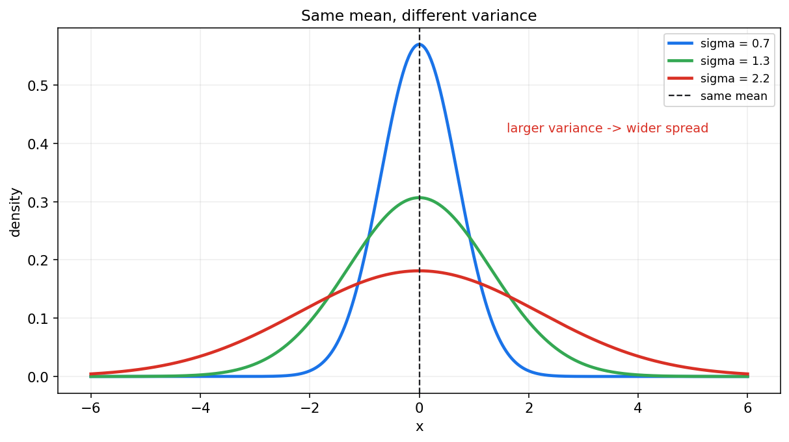
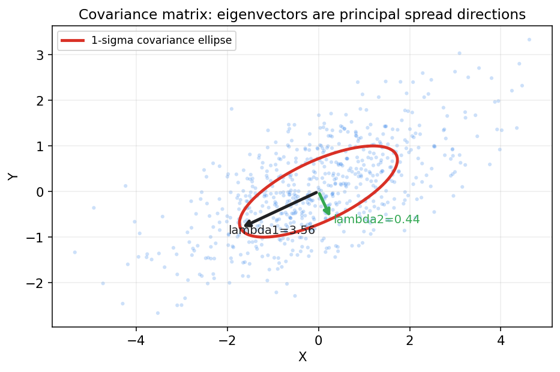
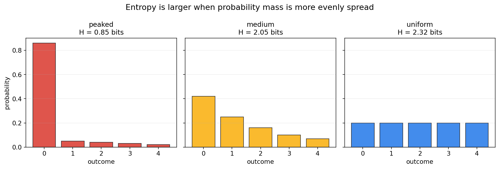
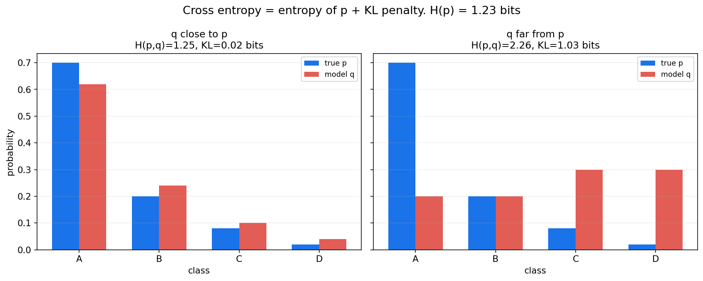

概率论第五章教程: 期望, 方差, 熵与信息量
第三章和第四章告诉我们怎样描述完整分布.
但很多时候, 完整分布太细, 我们还需要少量数字来概括它:1. 这个随机变量大致集中在哪里?
2. 它波动有多大?
3. 多个变量是同向变化还是反向变化?
4. 一个分布到底有多不确定? 两个分布相差多远?这一章把概率论的数字特征和信息论语言连起来.
0. 先看全章主线
第五章的主线可以压成下面这张图:
flowchart LR
A["完整分布"] --> B["期望<br/>中心位置"]
A --> C["方差和标准差<br/>波动规模"]
A --> D["矩, 偏度, 峰度<br/>形状特征"]
C --> E["协方差矩阵<br/>多维共同波动"]
A --> F["熵<br/>不确定性"]
F --> G["交叉熵<br/>用 q 编码来自 p 的数据"]
G --> H["KL 散度<br/>分布差异"]
F --> I["互信息<br/>变量之间共享多少信息"]
B --> J["统计学习中的损失和正则化"]
H --> J
I --> J一句话概括这一章:
期望和方差刻画平均行为与波动规模,
协方差刻画共同变化,
熵, 交叉熵, KL 和互信息刻画不确定性与信息关系.
1. 为什么需要数字特征
1.1 完整分布当然最好, 但不总是方便
如果你知道一个随机变量的完整分布, 理论上可以回答很多问题.
但现实分析里, 我们常常需要更压缩的描述:
- 一个模型平均误差多大?
- 某个指标波动是否稳定?
- 两个指标是否同涨同落?
- 一个分类器输出的概率分布是否很不确定?
这些问题不一定每次都需要完整分布.
一些精心设计的数字特征就很有用.
1.2 数字特征不是分布本身
一个非常重要的提醒是:
数字特征是对分布的压缩, 不是分布的全部.
例如两个分布可以有相同的期望, 但波动完全不同.
也可以有相同的期望和方差, 但形状仍然不同.
所以这一章的正确学习方式是:
先理解每个数字在概括分布的哪一面,
再理解它会丢掉哪些信息.
2. 数学期望: 加权平均的长期中心
2.1 从加权平均开始
期望最自然的入口不是公式, 而是加权平均.
假设随机变量 $X$ 取值为 $x_1,\dots,x_n$, 对应概率为 $p_1,\dots,p_n$.
那么它的期望是
也就是:
每个可能取值乘以它出现的概率, 再全部加起来.
2.2 一个骰子例子
公平骰子的点数 $X$ 满足
所以
注意, 骰子点数永远不会等于 $3.5$.
这正好说明:
期望不一定是随机变量可能取到的值.
它描述的是长期平均中心, 不是单次结果承诺.
2.3 连续型期望
若 $X$ 是连续型随机变量, 密度为 $f_X(x)$, 则
这和离散公式是同一件事:
- 离散型用求和
- 连续型用积分
2.4 函数的期望
更一般地, 若我们关心 $g(X)$, 则:
离散型:
连续型:
这条公式后面会非常常用.
例如方差本质上就是 $g(X)=(X-E[X])^2$ 的期望.
3. 期望的性质: 线性是最重要的
3.1 线性性质
期望最重要的性质是线性:
这条性质不要求 $X,Y$ 独立.
特别地:
无论 $X,Y$ 是否独立都成立.
3.2 常数的期望
如果 $c$ 是常数, 则
这很自然, 因为一个永远等于 $c$ 的随机变量, 长期平均当然还是 $c$.
3.3 缩放和平移
若
则
这意味着:
- 平移会把期望整体平移
- 缩放会把期望按比例缩放
3.4 乘积期望和独立性
一般来说,
只有在 $X,Y$ 独立时, 才有
这个条件很重要, 不能随便省略.
4. 方差与标准差: 波动规模
4.1 方差定义
方差定义为
它衡量的是:
随机变量围绕自身期望的平均平方偏离.
因为用了平方, 所以:
- 正负偏离不会相互抵消
- 大偏离会被更重地惩罚
4.2 常用等价公式
展开平方可以得到:
这条公式计算上很常用, 但理解上仍然要回到原始定义:
方差描述的是围绕中心的波动.
4.3 标准差
方差单位是原变量单位的平方.
为了回到原单位, 定义标准差:
标准差越大, 分布越分散; 标准差越小, 分布越集中.

图中三条曲线的均值相同, 但方差不同.
这说明:
只知道期望, 并不知道波动有多大.
4.4 方差的缩放性质
若
则
注意:
- 平移 $b$ 不改变波动
- 缩放 $a$ 会让方差乘以 $a^2$
4.5 方差的可加性条件
一般来说:
若 $X,Y$ 独立, 则协方差为 0, 此时:
这里的独立条件不能忘.
5. 协方差矩阵: 多维波动的形状
5.1 协方差回顾
两个随机变量的协方差为
它描述的是二者是否倾向于同向偏离自己的均值.
5.2 协方差矩阵
对随机向量
其协方差矩阵定义为
矩阵第 $i,j$ 个元素为
对角线是各维方差, 非对角线是两两协方差.
5.3 几何直觉
协方差矩阵不仅是一张数字表, 它还有很强的几何含义:
- 特征向量给出主轴方向
- 特征值给出对应方向上的波动强度

这和线性代数中的二次型直觉是同一件事.
高维正态分布, PCA, 白化, 高斯模型都会反复用到这条线.
5.4 协方差矩阵的基本性质
协方差矩阵满足:
- 对称:
- 半正定:
原因是
而方差不可能为负.
6. 矩, 中心矩, 偏度与峰度
6.1 原点矩
随机变量的 $k$ 阶原点矩定义为
例如:
- 一阶原点矩就是 $E[X]$
- 二阶原点矩 $E[X^2]$ 常用于计算方差
6.2 中心矩
$k$ 阶中心矩定义为
它描述的是围绕均值的形状信息.
6.3 偏度
偏度衡量分布的不对称程度, 常见标准化形式为
若偏度为正, 通常表示右尾更长; 若偏度为负, 通常表示左尾更长.
6.4 峰度
峰度常见标准化形式为
它和尾部厚度, 极端值倾向有关.
实际使用时常会看 excess kurtosis, 即减去正态分布的峰度 3.
6.5 第一遍学到什么程度
本章不要求深入各种矩估计细节.
第一遍要先知道:
- 期望是一阶信息
- 方差是二阶中心信息
- 偏度看不对称
- 峰度看尾部和极端值倾向
7. 熵: 分布的不确定性
7.1 离散熵定义
对离散分布 $p(x)$, Shannon entropy 定义为
如果对数以 2 为底, 单位是 bit.
如果以自然对数为底, 单位是 nat.
7.2 熵的直觉
熵衡量的是:
从这个分布中抽样时, 结果有多难提前猜.
如果分布非常尖锐, 大部分概率都压在一个结果上, 不确定性小, 熵低.
如果分布很均匀, 每个结果都差不多可能, 不确定性大, 熵高.

7.3 两个极端
若某个结果概率为 1, 其他结果概率为 0, 则熵为 0.
因为结果完全确定.
若有 $n$ 个结果且均匀分布:
则熵最大:
7.4 熵不是方差
熵和方差都在描述某种"不集中", 但它们不是一回事.
- 方差依赖数值距离
- 熵只依赖概率分布本身
例如类别标签没有自然距离, 但仍然可以谈熵.
8. 交叉熵: 用错误分布编码真实数据的代价
8.1 定义
给定真实分布 $p$ 和模型分布 $q$, 交叉熵定义为
它衡量的是:
数据来自 $p$, 但你用 $q$ 去编码或预测时的平均代价.
8.2 为什么机器学习里常见交叉熵
分类任务里, 真实标签常写成 one-hot 分布 $p$.
模型输出 softmax 概率 $q$.
交叉熵损失就是
如果真实类别是 $y$, one-hot 情况下就变成
也就是:
模型给真实类别的概率越低, 损失越大.
8.3 交叉熵不等于熵
熵 $H(p)$ 只看真实分布自身.
交叉熵 $H(p,q)$ 同时看真实分布和模型分布.
当 $q=p$ 时, 交叉熵才等于熵.
9. KL 散度: 分布差异的非对称度量
9.1 定义
KL 散度定义为
它衡量的是:
用 $q$ 代替 $p$ 时, 额外付出的平均信息代价.
9.2 与交叉熵的关系
把定义展开:
所以

这张图说明:
- $H(p)$ 是真实分布自身的不确定性
- $D_{\mathrm{KL}}(p\|q)$ 是模型分布 $q$ 与真实分布 $p$ 不一致带来的额外代价
- 交叉熵是二者之和
9.3 KL 的两个关键性质
- 非负:
且当 $p=q$ 时取 0.
- 非对称:
所以 KL 不是距离, 至少不是通常意义下的度量距离.
9.4 为什么机器学习里优化交叉熵常等价于优化 KL
如果训练数据分布 $p$ 固定, 那么 $H(p)$ 与模型参数无关.
此时最小化
等价于最小化
这就是交叉熵损失和分布拟合之间的核心连接.
10. 互信息: 两个变量共享多少信息
10.1 定义
互信息定义为
展开就是
连续情形可以写成积分形式.
10.2 直觉
互信息衡量的是:
知道 $Y$ 以后, 对 $X$ 的不确定性减少了多少.
也可以理解成:
联合分布和"独立情况下的乘积分布"相差多远.
10.3 与独立性的关系
若 $X,Y$ 独立, 则
于是
反过来, 在常见条件下, 若互信息为 0, 也意味着独立.
10.4 为什么互信息重要
互信息在机器学习里很常见:
- 特征选择: 特征和标签共享多少信息
- 表示学习: 表示是否保留了任务相关信息
- 自监督学习: 最大化不同视图之间的信息关联
- 信息瓶颈: 保留对标签有用的信息, 压缩无关信息
11. 常见分布的数字特征速查
下面只列最常用的期望和方差:
| 分布 | 期望 | 方差 |
|---|---|---|
| Bernoulli($p$) | $p$ | $p(1-p)$ |
| Binomial($n,p$) | $np$ | $np(1-p)$ |
| Poisson($\lambda$) | $\lambda$ | $\lambda$ |
| Geometric($p$), 试验次数版本 | $1/p$ | $(1-p)/p^2$ |
| Uniform($a,b$) | $(a+b)/2$ | $(b-a)^2/12$ |
| Exponential($\lambda$) | $1/\lambda$ | $1/\lambda^2$ |
| Normal($\mu,\sigma^2$) | $\mu$ | $\sigma^2$ |
这张表最好和第三章的场景模板一起记.
不要只背数字, 要知道这些分布在描述什么.
12. 本章主线总结
第五章压成最短的一条线, 就是:
- 期望是长期加权平均中心
- 方差和标准差描述围绕中心的波动规模
- 协方差矩阵描述多维变量的共同波动形状
- 熵描述分布本身的不确定性
- 交叉熵和 KL 描述用模型分布逼近真实分布的代价
- 互信息描述两个变量共享的信息量
这些量一起构成后续统计推断和机器学习的基础坐标系.
13. 典型题型与实战清单
这一章最常见的题型, 基本都可以归到下面几类:
- 计算期望
- 离散求和
- 连续积分
- 注意函数期望 $E[g(X)]$
- 计算方差
- 原始定义
- 或用 $E[X^2]-(E[X])^2$
- 处理线性变换
- 期望按 $aX+b$ 线性变换
- 方差按 $a^2$ 缩放
- 协方差和相关系数
- 看共同变化方向
- 不把不相关误认为独立
- 信息论量
- 熵看自身不确定性
- 交叉熵看预测代价
- KL 看额外代价
- 互信息看变量共享信息
一个实战工作流可以直接记成:
先问中心, 再问波动, 再问关系, 最后问信息.
14. 典型误区
误区 1: 把期望当成一定会出现的值
骰子点数的期望是 3.5, 但单次骰子不可能掷出 3.5.
误区 2: 只会套方差公式, 不理解波动含义
方差的本质是平均平方偏离, 不是一个孤立代数公式.
误区 3: 忘记方差对缩放是平方响应
若 $Y=aX+b$, 则
不是 $a\mathrm{Var}(X)+b$.
误区 4: 把交叉熵和 KL 当成完全一样
它们关系密切, 但不是同一个量:
当 $p$ 固定时, 优化交叉熵才常常等价于优化 KL.
误区 5: 把 KL 当成对称距离
KL 是非对称的, 所以不能随便把方向反过来.
误区 6: 混淆熵和方差
方差依赖数值尺度.
熵只看概率分布的不确定性.
15. 和前后章节的连接点
这一章向后连接的路线非常清楚:
- 第六章极限定理
- 大数定律和中心极限定理都围绕期望, 方差和标准化展开
- 第七章抽样分布
- 样本均值和样本方差本身就是统计量, 需要这些数字特征描述
- 第十章回归
- 最小二乘, 残差方差, 协方差结构都会用到这里
- 第十五章以后统计学习
- 损失函数, 泛化, 交叉熵, KL, 互信息都会反复出现
所以第五章是从概率论走向统计学习的一座核心桥.
16. 和机器学习, 数据分析, 科研实践的连接点
如果你是为了机器学习来学这一章, 最值得提前记住的是:
- MSE
- 和平方误差, 方差, 高斯噪声假设相关
- Cross Entropy
- 分类任务最常见损失之一
- 本质上是在惩罚模型分布和真实标签分布不匹配
- KL
- VAE, 蒸馏, 分布对齐, 变分推断里高频出现
- 互信息
- 自监督学习, 表示学习, 特征选择中常见
- 协方差矩阵
- PCA, 高斯模型, whitening, 二阶优化和不确定性估计都离不开
这一章的工程价值可以压成一句话:
它把分布变成一组可比较, 可优化, 可解释的数字.
17. 本章收尾
如果说第三章和第四章讲的是"分布怎样长", 那第五章讲的就是:
怎样用少量数字抓住分布的中心, 波动, 形状, 不确定性和信息关系.
后面进入极限定理和数理统计以后, 你会发现很多结论的核心都绕不开期望, 方差和信息量.